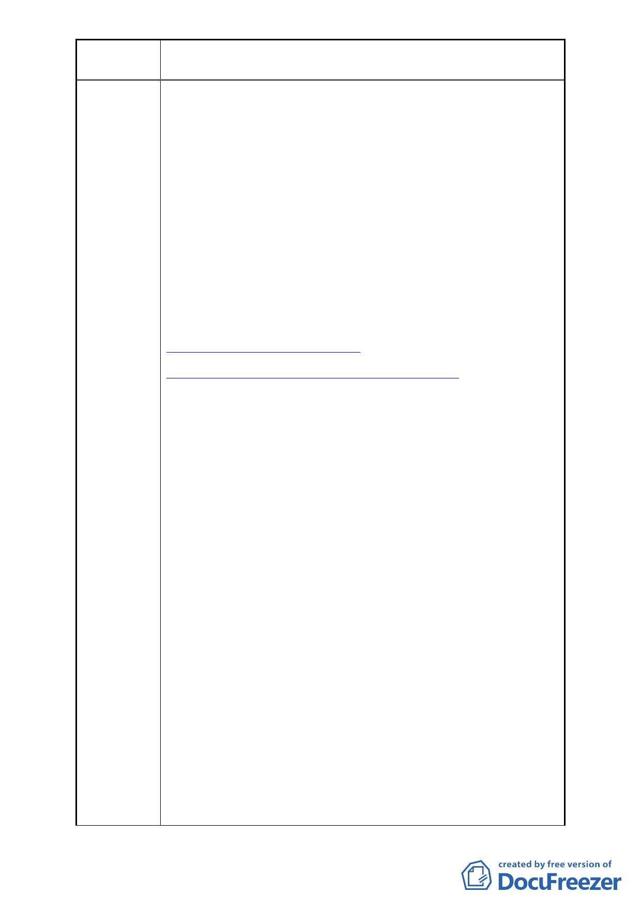

案名
變更臺北市中正區南海段一小段 719、724 地號等 2 筆停車場
用地為廣場用地細部計畫案
（2）臺北市中正區轄區內公園及廣場列表：
．中正 念 ：佔地面積 250000 平方公尺
．台北植物園：佔地面積 150000 平方公尺
．二二八公 ：佔地面積 71520 平方公尺
．介壽公園：佔地面積 12370 平方公尺
．牯嶺公園：佔地面積 3 42 平方公尺
．齊東公園：佔地面積 1061 平方公尺
．文盛公園：佔地面積 734 平方公尺
．文光公園：佔地面積 2252 平方公尺
．信愛公園：佔地面積 901 平方公尺
．連雲公園：佔地面積 2009 平方公尺
．南陽公園：佔地面積 465 平方公尺
．永昌公園：佔地面積 1622 平方公尺
． 昌公園：佔地面積 4413 平方公尺
．忠孝公園：佔地面積 1302 平方公尺
資料來源：
台北市政府主計處
http://w2.dbas.taipei.gov.tw/statchart/e5.htm
臺北市中正區公所
http://tcgwww.taipei.gov.tw/ct.asp?xItem=35168&ctNode=4663&mp=124101
2.「就地安置」之訴求─合情！合理！合法！建請政府專案
專簽處理本案。
（1）本案之變更計畫，一直停擺在爭議的狀態，至今已超過
60 年。因為歷經 12 任市長均認為應兼顧都市發展及居
民利益，需有更完整妥善的規劃，而將本案擱置，希望
在公平、合理、公正的原則下，使地盡其利。
（2）原住戶早在政府光復前，即居住於此。地上物為日據時
代就有古厝，戶政地政皆有資料記載（附件）。自民國
39 年起至今多次向政府申請承購、承租(附件)，均未蒙
核准，而政府則於民國 40 至 42 年才登記為國有地，在
民國 44 年准許廣東同鄉會申購土地，民國 62 年卻將該
地變更為住商用地給廣東同鄉會興建廣東大樓(附
件)，政府明顯製造特權，不法、不公、不義的與民爭
利。
（3）同一塊地目由最初公共設施用地變更為住商用地（特准
廣東大樓興建）；即輾轉變更為公園用地；於民國 70 年
將公園用地變更為停車場用地；現在又將停車場用地變
回廣場用地，建國 100 年都市更新建設回到 30 年前的
都市規劃，顯見政府閉門造車、政策反覆、不合理，製
造民怨。
（4）政府編列 5300 多萬預算蓋廣場，卻忽略十幾戶在此居
住五、六十年市民的生存與居住權益，以不合理、不對
等的補償辦法處理本案，無視於住戶無家可歸與面臨生
- 12 -